Casual Art
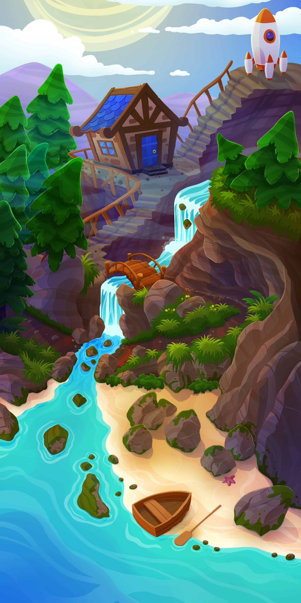
Environment I painted in Photoshop.
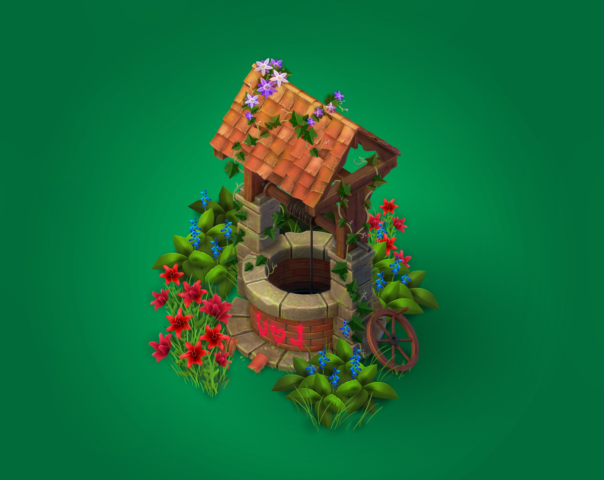
Well I modeled and unwrapped in Blender. Textured and edited in Photoshop.
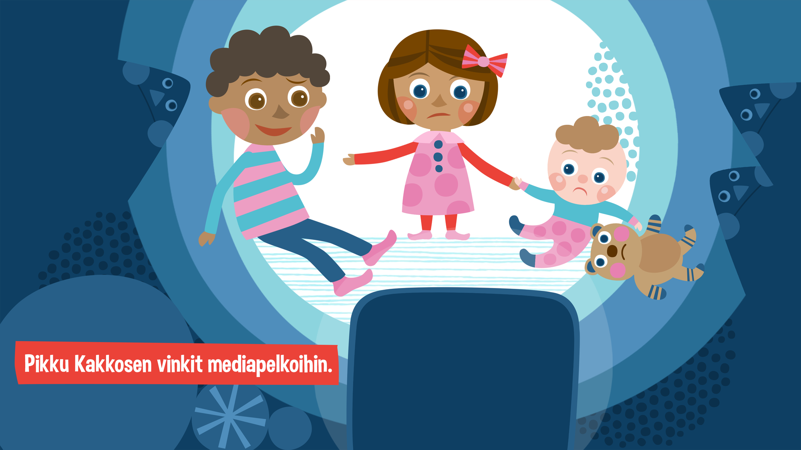
An illustration for the Finnish Children's Show Pikku Kakkonen about "Media Fear". I created this in Adobe Photoshop.
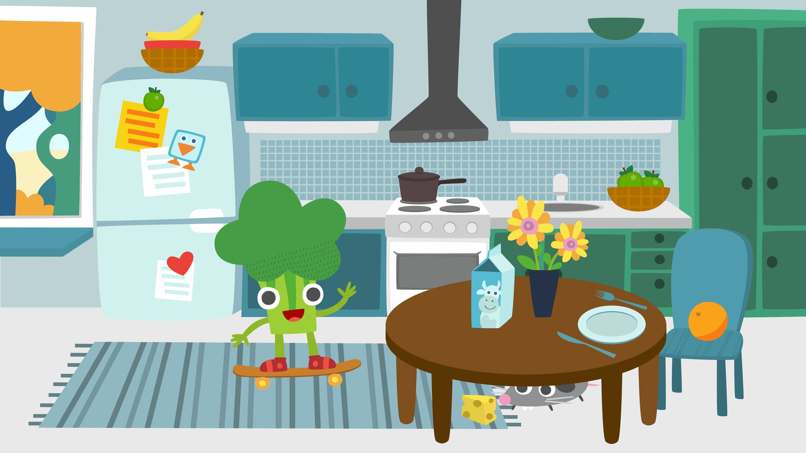
Inspired by the visual style of the Finnish Children's show Pikku Kakkonen. I created this in Adobe Illustrator.
3D cat character I modelled and textured in Blender. Posing and rendering I created in Unity.
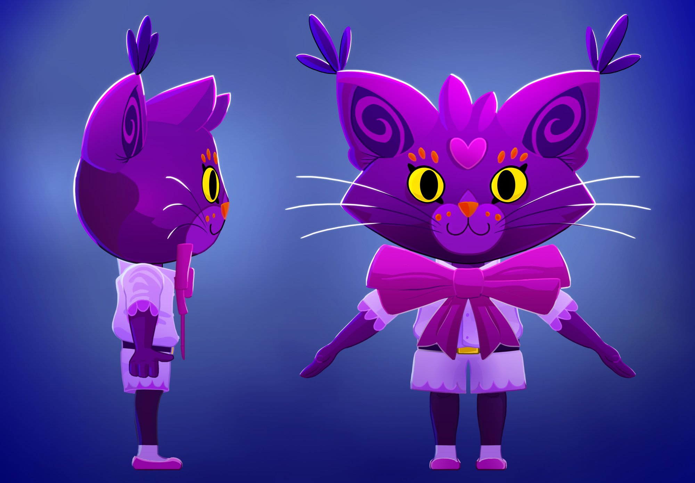
Cat character concept art I painted in Photoshop. I used this as reference image in Blender for modeling.
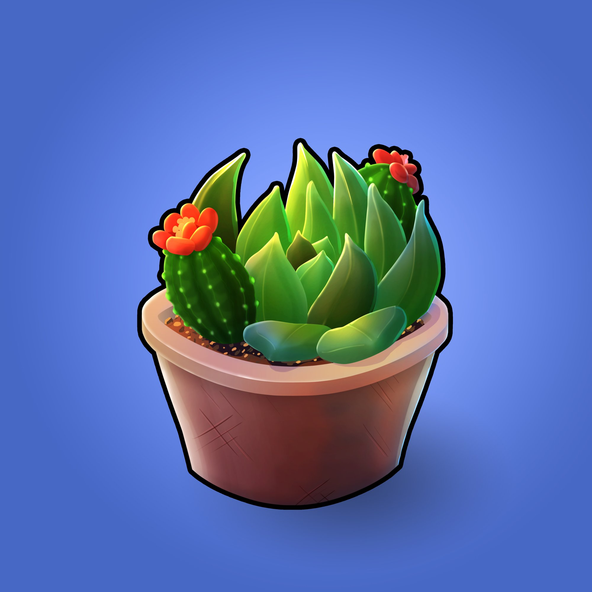
Flower Item (Level 1 Succulent) I painted in Photoshop.
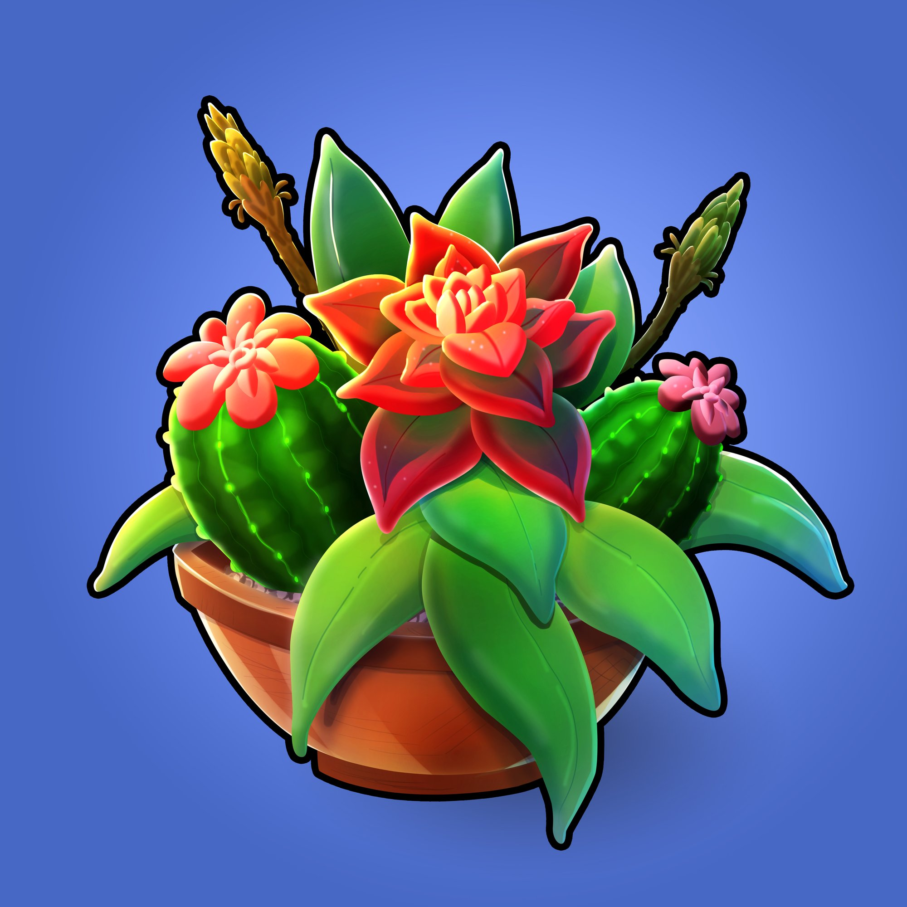
Flower Item (Level 2 Succulent) I painted in Photoshop.
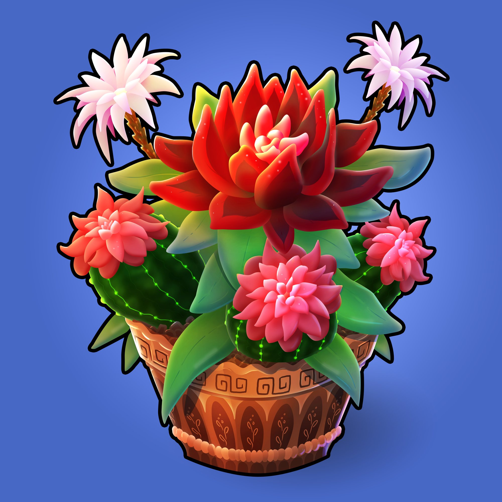
Flower Item (Level 3 Succulent) I painted in Photoshop.
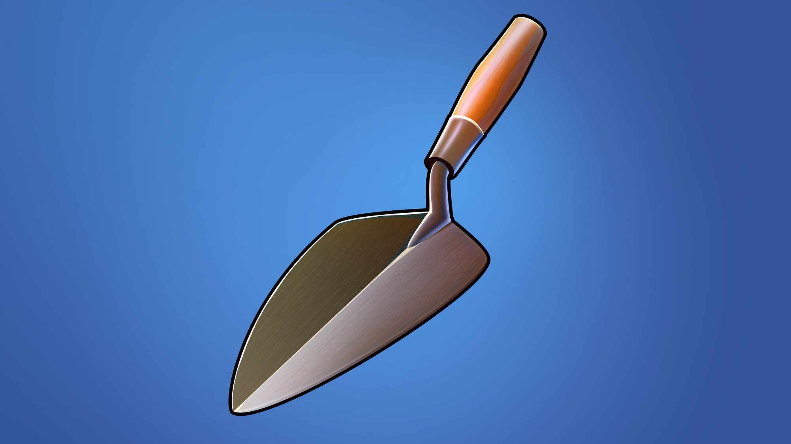
Trowel item I painted in Photoshop.
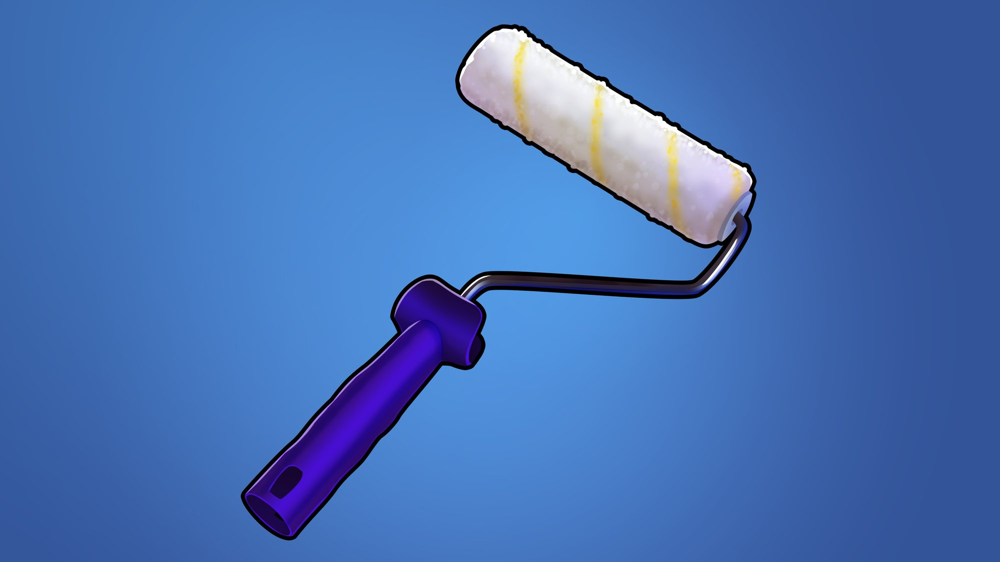
Paint Roller item I painted in Photoshop.
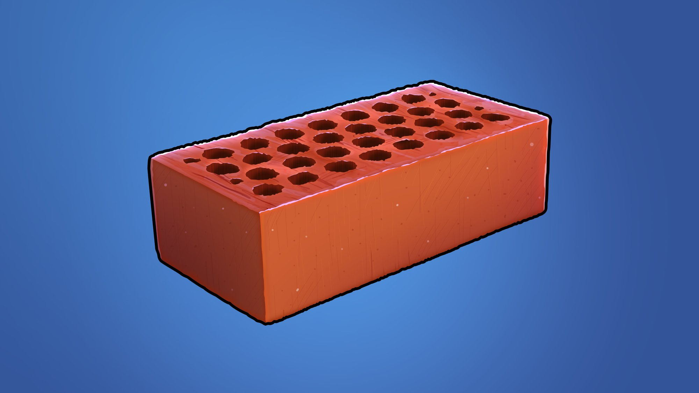
Brick item I painted in Photoshop.
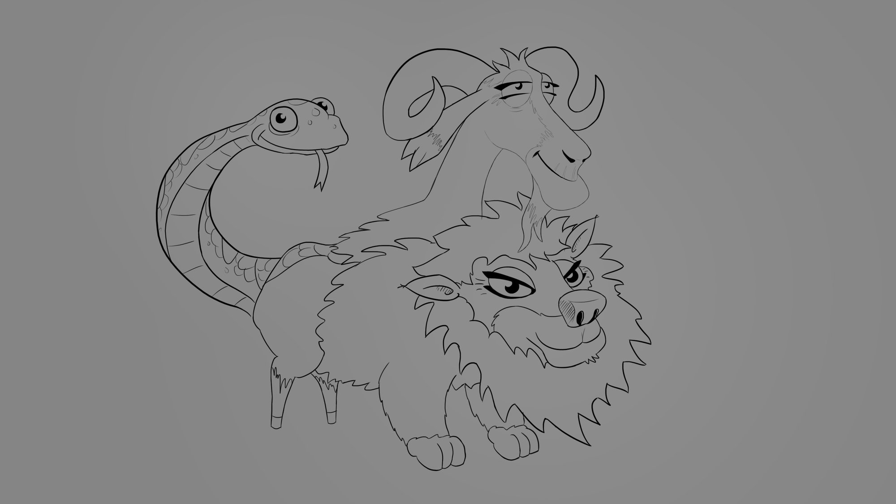
Hayday Chimera Sketch I drew in Photoshop.
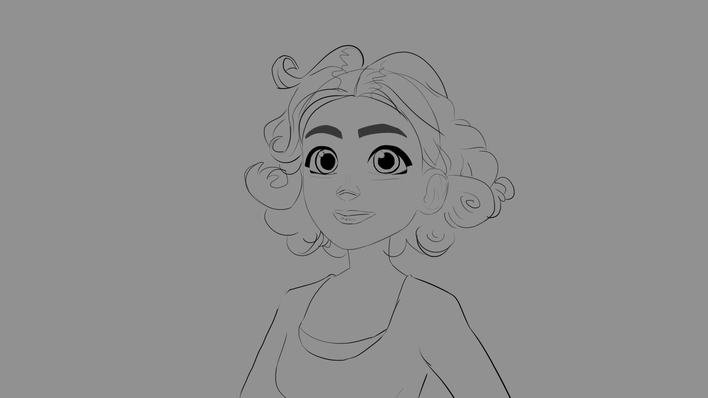
Sketch of a certain character I drew in Photoshop.